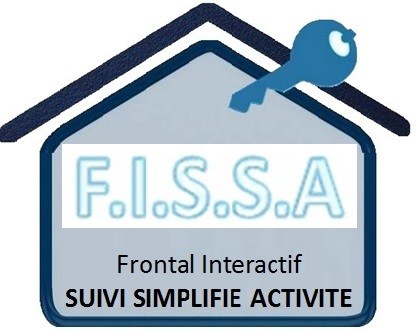

Mentions légales
Editeur du service :
Association ADILEOS
8 Rue Maurice Berteaux
92 130 Issy-Les-Moulineaux
Mail : adileos@doc-depot.com
• Identification R.N.A. : W923004894
• No de parution : 20140016
• Département (Région) : Hauts-de-Seine (Île-de-France)
• Lieu parution : Déclaration à la sous-préfecture de Boulogne-Billancourt.
Opérateur du service : OVH
Directeur de publication : Jean Michel Cot
Copyright : Tous les éléments du présent site web sont protégés par le droit d'auteur. A ce titre, toute reproduction, représentation, utilisation, adaptation, modification, incorporation, traduction, commercialisation, partielles ou intégrales des éléments contenus dans ce site, sans l'autorisation écrite préalable d’ADILEOS, est interdite.